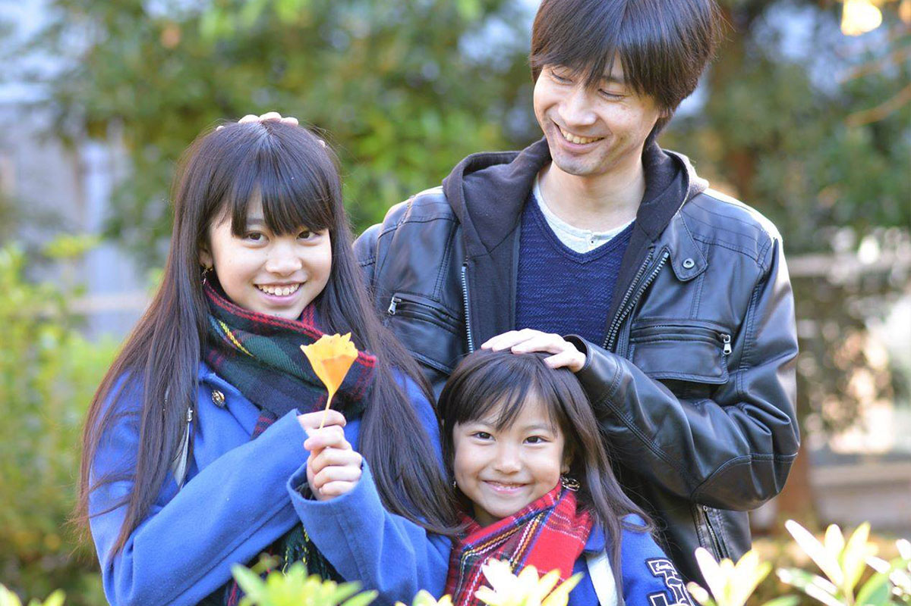
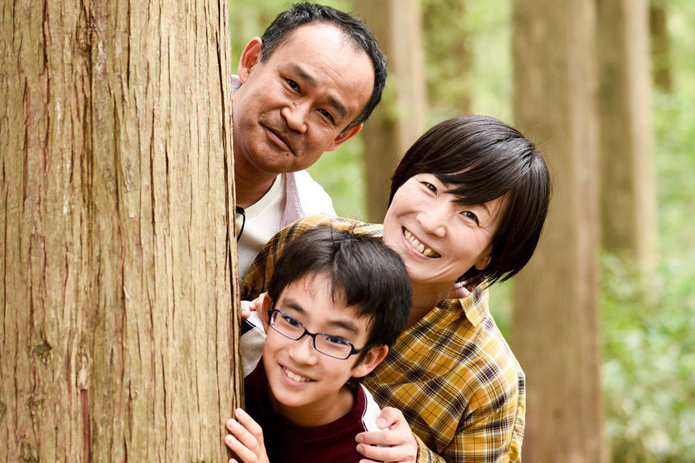
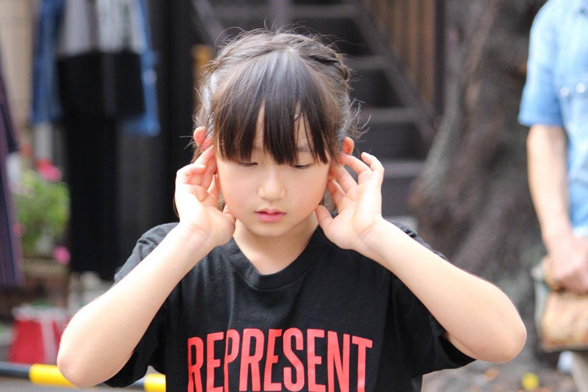

VOICE
スクール生の声

眞塩俊介さん（保護者）
藍咲ちゃん（中２）穂和ちゃん（小３）
俊介さん
「印象に残っているのは、ひなたアクターズスクールとの出会いでもある、第1期生の中間発表会です。プロのアーティストによる生演奏の中で芝居が繰り広げられることで、まだレッスンを始めて半年も経たない子供たちが生き生きと躍動する姿に驚かされました。 少しでもスクールに興味のある方は、中間発表や修了公演を見学してみるのがおすすめです。レッスンの内容はスクール内の発表会に留まらず、数多くの街のイベントなど実践と直結したカリキュラムとなっています。そのため、子供たちの身近に目標があり、常に緊張感と達成感を感じなが ら楽しく通っていました。 長女はそれまでボーカルスクールやダンススクールに通っていて、上手く歌ったり踊ったりすることを成果としていました。ひなたアクターズスクールに通ってからは、レッスンと実戦経験を通して人 に何かを伝ることをより大切に考えられるようになったと思います。次女は芸術系の習い事が初めてでしたが、お芝居することが大好きになりました。第一歩を踏み出すことができました。」

田村美智代さん（保護者）
優奏ちゃん（小５）
優奏ちゃん
「私は2期生としてアクターズスクールに入りました。緊張している初対面の私に、１期生のみんなが明るく笑顔で接してくれ、驚きと安心感を与えてくれた事が印象的で、私もそうなりたいなと強く思ったのを思い出します。スクールに入所したらとても忙しかったです。プロの先生方に教えてもらい技術面ではとても成長しました。それと同時に気持ちの変化もありました。今までの私なら『疲れた…もうやりたくない』で終わりましたが『もっとやりたい‼やってみたい‼』に変わり、自分の気持ちや心が強くなりました。『ステージに立ちたい！』という明確な夢を持てたし、何事にも100%で挑むようになりました。一年前の自分とは大違いです！」
美智代さん
「新しい事を学ぶ喜び、ステージに立つ喜び。娘の笑顔が格段に増えました。また、困難に直面した時、自分で考え解決する力も養われ、「生きる力」が身についてきていると感じます」

石山達也さん（保護者）
心人くん（中１）
心人くん
「ひなたアクターズスクールに通って変わったことは人前に立つことの羞恥心や抵抗が無くなった ことです。ひなたアクターズスクールに通って良かったことは、大人と過ごす時間が多くなり、とても沢山の刺激をもらって、貴重な経験を沢山できたことです。」
達也さん
「一期生として入り、やる事全てが楽しくて仕方がない日々…。そんな中、抜擢された『ひなた号のチビ介役』。稽古当初、ダメ出しの連続に楽しいだけではやってはいけない現実を知る。お客様の前に立つことの責任と自覚。それでも彼が頑張れたのは、講師の先生方の厳しさの中にあるその何倍もの愛情を感じたから。その時から彼が変わり、それは私生活での振る舞いにも影響し、グッと成長したことを感じました。このスクールでは、教科書には載っていない、生きていくうえで 大切なことを学ばせていただいています。レッスンのみならず、様々なイベントや舞台出演など、アクターズスクールでのたくさんの経験の中で見てきた景色は、将来必ず彼の財産になっていると思います。

柳尾千華さん（保護者）
有菜ちゃん（小４）
千華さん
「何度も練習したステップができたこと、自分か出てるシーンで笑ってもらえたこと、また、学校でも大きな声が出るようになったこと…。それらの積み重ねが娘の自信に繋がっています。さらに、観てくれる人を笑顔にしたいとの想いで挑戦した『ひなた号の冒険』で見えた景色は、『今まで見たことがない、綺麗でキラキラしたもの』だったとか。本気で生きるオトナたちとの触れ合い、 個性や年齢が異なる集まりの中で磨きあえる環境に感謝しています。」